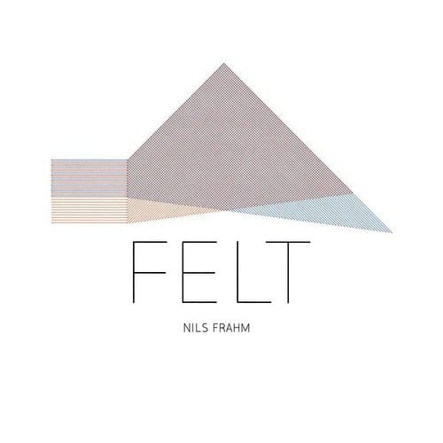

Amsterdam Klezmer Band - Son
Хоть родился я в рубашке, Рубашка эта – не для глажки! След простыл, покрылся серой пылью, Нет, не родился я, чтоб сказку сделать былью. чудно!
Хоть родился я в рубашке, Рубашка эта – не для глажки! След простыл, покрылся серой пылью, Нет, не родился я, чтоб сказку сделать былью. чудно!

Какой охуенный Ван Гог! via

Очень приятный фьюче джаз / айдиэм из Чехии. Инфа о пластинке на discogs.
Клевая какая градиентная колготня!
Купить Вакомовский стилус для айПада и эту прогу и можно будет забыть о всяких там дигитайзерах! Супер!

Очень приятный альбом.
День из жизни крутого складского робота. via
Чуваки собирают твой байк при тебе за 2 часа.
Клевое видео о том, как делают джинсу.

Просто очень хороший альбом.